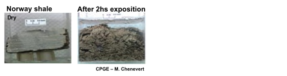

Subsections
Introduction animation video from Marathon: https://www.youtube.com/watch?v=VY34PQUiwOQ.
Figure 7.23:
Ideal hydraulic fracture geometry in horizontal wellbores with least principal stress .
|
Figure 7.24:
Ideal hydraulic fracture geometry in horizontal wellbores depending on the direction of least principal stress.
|
Pad fracturing
Figure 7.25:
Pad fracturing.
|
Sneddon’s solution for stresses around an elliptical crack in plane-strain.
Figure 7.26:
Fracture interference [Make your own].
|
Figure 7.27:
Fracture interference example for consecutive fracturing. EXAMPLE: Barnett Shale, Depth=7000 ft, SHmax=6400 psi, Shmin=6300 psi, Pay zone 300ft.
|
Optimizing wellbore spacing, stage separation and sequencing.
Zipper fracs and alternate sequencing avert fractures to coalesce based on stress shadow effects.
Figure 7.28:
Zipper fracturing example.
|
Multicluster fracturing
Figure 7.29:
Multicluster fracturing.
|
Figure 7.30:
Fracture branching idealization.
 |
Stimulated reservoir volume.
Figure 7.31:
Microseismicity idealization.
|
![\includegraphics[scale=0.45]{.././Figures/split/9-MultistageFracturing.PNG}](img1030.svg)
![\includegraphics[scale=0.45]{.././Figures/split/9B-18.pdf}](img1035.svg)
![\includegraphics[scale=0.45]{.././Figures/split/9-MulticlusterFracturing.PNG}](img1037.svg)
![\includegraphics[scale=0.65]{.././Figures/split/9-Microseismicity.PNG}](img1039.svg)